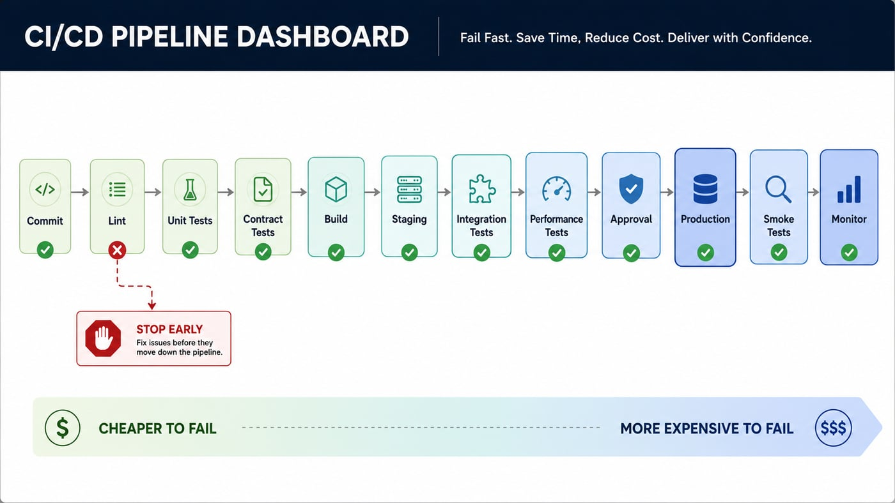
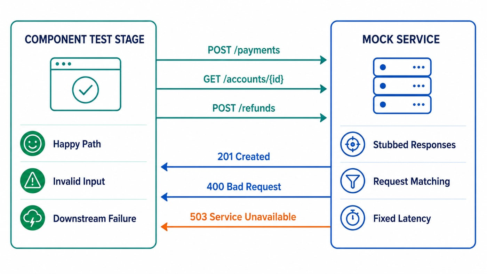

A CI/CD pipeline is really just a series of gates, each one cheaper to fail at than the next. Fail fast on a lint error, not three hours later on a failed production deploy. Here's roughly how I've built these in Jenkins, and where AI tooling actually changes the work rather than just decorating it.
What actually needs to be in the pipeline
Every stage exists to catch a specific class of problem before it gets more expensive to fix, but the exact shape of a pipeline varies by team and by what's actually shipping. The dashboard below is one example of what that can look like, not a template to copy stage for stage:

What actually matters isn't matching those box names, it's a handful of decisions that hold regardless of the tool. A PR or preview environment should answer one question fast: does this obviously work. Unit tests, static analysis, and a quick contract check against whatever the change touches belong there, anything slower than a few minutes defeats the point of a preview environment in the first place. Staging is where it's worth being slower and more thorough: full integration tests, a proper regression pass, a performance run if the change touches anything latency-sensitive. Production itself mostly runs smoke tests and leans on monitoring rather than more testing, by that point the job is watching for problems, not hunting for them.
The biggest lever for keeping a pipeline fast is refusing to spin up more than a given stage actually needs. If a test only cares that your service sends the right request to a downstream API, mock that API rather than standing up the real thing, a WireMock stub or a Pact contract answers the same question without the cost of a second service booting, a shared database seeding, or a flaky network call between two things that don't need to be real yet. Save the real downstream dependencies for the handful of tests that genuinely need to prove the integration works end to end, and let everything else run against a mock that starts in milliseconds instead of minutes. That distinction, mocked versus real, is usually a better lever for pipeline speed than parallelizing more aggressively, though that helps too: any stages with no dependency on each other's output should run at the same time rather than back to back, the only real cost is a bit more compute, and compute is cheaper than a developer waiting.

Manual approval before production is the one gate I go back and forth on. Done right, it's someone glancing at a diff and catching the one thing no pipeline would ever know to check, a deploy window that's a bad idea this week for reasons that have nothing to do with the code. Done lazily, it's a rubber stamp nobody's really reading anymore, friction dressed up as safety. I keep it for anything with real blast radius, how trades settle, anything touching money, and skip it for a marketing page nobody's betting anything on.
End-to-end tests are the other one worth arguing about. They're the closest thing to proof that a real user journey actually works, and nothing else gives quite that signal. They're also slow, expensive to maintain, and the first thing to go flaky when an unrelated part of the system changes. Shift-left testing is the argument that most of what E2E tests are trying to catch should be caught earlier and cheaper: contract tests instead of a full round trip through three services, component tests instead of driving a real browser, static analysis instead of waiting for a test to fail at all. I don't think that makes E2E tests obsolete, it makes them something to spend sparingly, reserved for the handful of journeys where nothing else gives real confidence, checkout, login, whatever actually loses money or trust if it breaks, and pushes everything else as far left as it'll go.
Jenkins' job in all of this isn't just running commands in order, it's the thing that fails loudly and stops the pipeline the moment any of these gates doesn't pass, so a bad build physically cannot reach the next stage.
Where AI actually speeds up building this
The genuinely useful part isn't AI writing the whole pipeline for you, it's compressing the boilerplate around it. I use Claude and GitHub Copilot to scaffold new Jenkinsfile stages from a description of what needs gating, draft the first pass of a test suite from acceptance criteria so I'm editing instead of starting from a blank file, and generate synthetic test data for edge cases I'd otherwise have to construct by hand. None of that replaces deciding what should actually gate a deploy, that's still a judgment call about risk, but it collapses the distance between "I know what stage I need" and "the stage exists and runs."
It also speeds up triage when a stage fails. Instead of scrolling a wall of Jenkins console output, I'll have it summarize what actually broke, which test, what the assertion expected versus got, whether it looks like a real regression or a flaky environment issue, so I'm reading a two line summary before I decide whether it's worth a deeper look.
Where AI helps after it ships
This is where it earns its keep the most, honestly. Datadog's anomaly detection already flags when a metric moves outside its normal pattern without anyone defining a static threshold for it, error rate creeping up, latency drifting on one endpoint, that kind of thing. Layer an LLM on top of the alert and the incident, and instead of a page of raw logs and traces across four services, I'm getting a plain-language summary: which service, which endpoint, what changed around the same deploy window, and a first hypothesis on root cause.
It doesn't replace the investigation, the same way automation doesn't replace exploratory testing. It gets me to the starting point faster. Root-causing that trading tenor defect still took someone actually confirming the hypothesis against the real data. What AI changes is how long it takes to get from "something's wrong" to "here's where to start looking," which on a bad on-call night is most of the battle.